Layout Tab
- Layout Window Components
- Toolbar Widgets
- Find/Select Object
- Color Preferences
- Objects Page
- Bus Guide Color Selection
- Wire/Via Page
- View-Only Page
- Custom Page
- Cell Layout Page
- Customizing Layer Color Patterns (Pattern Window)
- Customize Tab
- Save Color Preference
- Multicolor Layers
- Metal Layers and Other Layered Components
- Creating and Editing Color Groups
- Color Bar
- Object Color
- Create Ruler Preferences
- Satellite Window
- Auto Query
Layout Window Components
Use the Layout window to display the physical view of the design in design display area. The components in the Layout window are identified in the following figure, and described in the sections that follow.
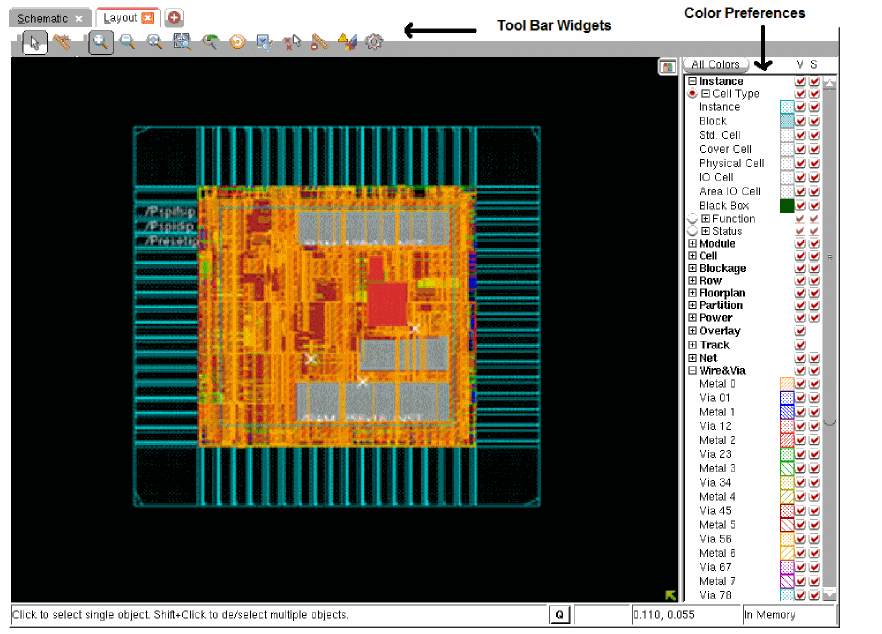
Toolbar Widgets
The following row of widgets, located below the menus and above the design display area, includes shortcuts for some commonly used Innovus commands.
The following table describes the widgets that are located in the Toolbar Widget area:
| Widget | Description |
|
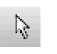 |
Select--Click this widget, then click a floorplan object to select it. To select multiple objects, use the Shift key or click and drag the mouse. |
|
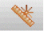 |
Ruler--Click this widget, then left-click in the design display area and drag the mouse to add a ruler (in micrometers), and left-click again to end the ruler. To move the ruler, left-click and drag it to a new location. Left-click the ruler again to keep it in the new location. To remove a ruler, left-click on it and press Esc. To remove all rulers, press K (Shift-k). You can set the direction in which rulers can be drawn by clicking the widget, then pressing the F3 key to display the Set Ruler Mode form. You can choose to draw orthogonal, vertical, horizontal, or diagonal rulers. You can also snap rulers to floorplan objects. |
|
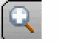 |
Zoom In--Click this widget to display a smaller area of the design in greater detail. Each click zooms in one level. The equivalent bindkey is z. |
|
Zoom Out--Click this widget to display a larger area of the design in less detail. Each click zooms out one level. |
|
|
Fit--Click this widget to display the entire placed design within the design display area. The equivalent bindkey is f. |
|
|
Zoom Selected--Select one or more design objects, then click this widget to zoom into the area that contains the selected objects. |
|
|
Zoom Previous--Click this widget to toggle the display between the previous location/zoom level and the current location/zoom level. The equivalent bindkey is l (the letter L). |
|
|
Redraw--Click this widget to update the display with new colors or stipple patterns that you selected from the More Colors form. |
|
|
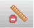 |
|
|
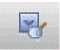 |
Find/Select Object--Displays the Find/Select Object form. |
|
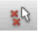 |
|
|
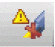 |
Clear DRC Violations--Clears all DRC violations from design display area. |
|
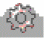 |
Opens the Preferences form, which enables you to customize the schematic display settings, color, and font. |
Find/Select Object
Use the Find/Select Object form to find and select specific object types in the design display area.

Fields and Options
Color Preferences
To set advanced color options, click the All Colors button in the Colors panel on the Layout window. This opens the Color Preferences form, which has five pages: Objects, Wire/Via, View-Only, Custom, and Cell Layout
The visibility settings between the pages and the Layout window are synchronized. That is, as soon you change any setting on any page, the corresponding changes are applied in the Layout window.
After making changes to the All Colors form, you can perform the following actions:
- To apply the changes in visibility, selections, color, and stipple pattern to objects in the design display area, click Close.
- To save a color preference file, click Save. For more information, see Save Color Preference.
- To load a preference file, click Load.
Objects Page

The Objects page includes the visibility and selection controls for objects that can be viewed and selected. Each object type has a color button that displays the current color and stipple pattern used to identify the object in the design display area.
Click a color button to select it, then click a new color and pattern from the Edit Layer section of the form. Click Apply to update the Color Preferences form.
Double-click the color button for an object to open the Color form that shows a check box for indicating whether the object type is visible in the design display area, and another check box for making the object type selectable.
When you move the cursor over an object layer name, the equivalent database object name is displayed.
Bus Guide Color Selection
- Use the Bus Guide Color Selection form to specify multiple colors for bus guide objects.
-
Double-click the Color Preferences -- Objects -- Bus Guide object type to display the Bus Guide Color Selection form.
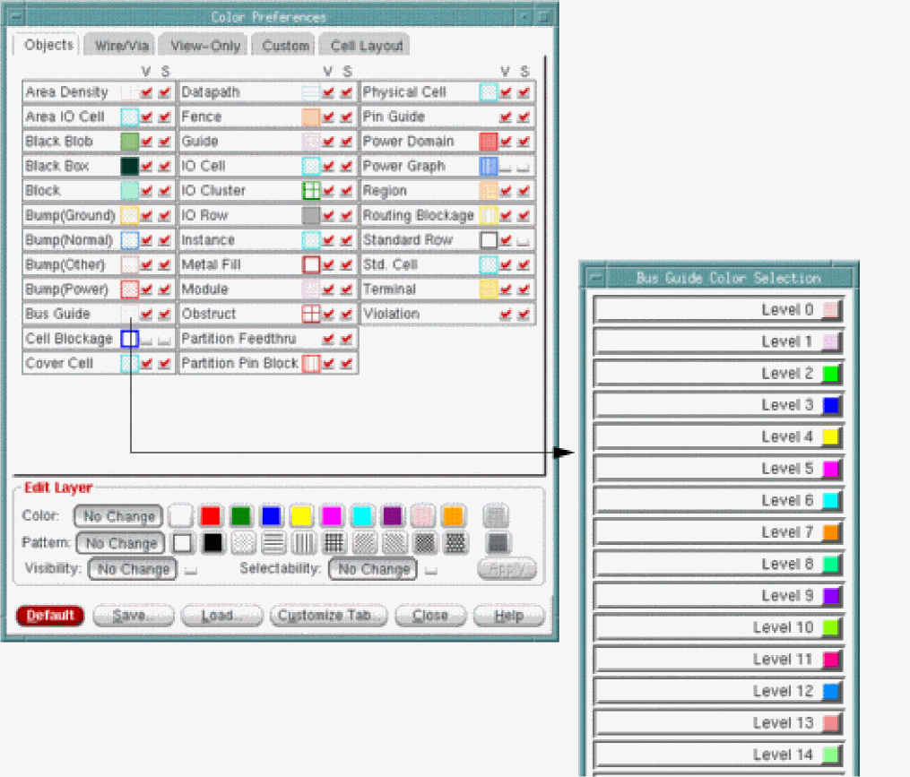
Wire/Via Page
The Wire/Via page includes the visibility and selectability controls for layer-based objects: Wires and Vias, Pins, Blockages, and Violations. You can set global display controls for all objects on the same layer. You can also set controls for individual objects on specific layers.

View-Only Page
The View-Only page includes the visibility controls for objects that can be viewed but not selected in the Layout window.
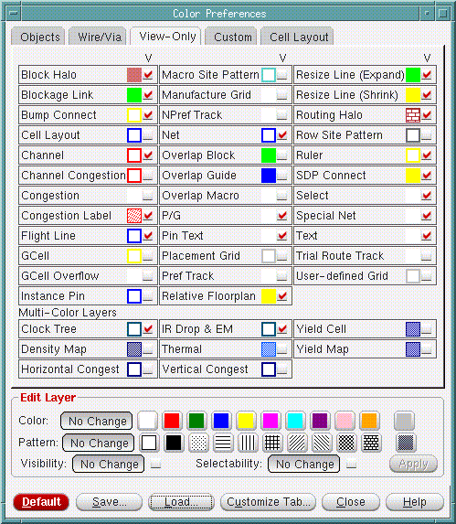
Custom Page
The Custom page contains custom objects.
To select a group of objects that are to have the same color and fill pattern, Shift-click the first and last objects in the group, click the new color and the new fill pattern, then click Close.
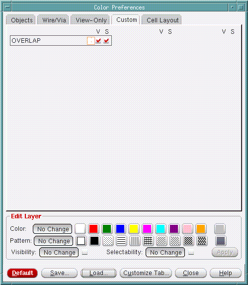
Cell Layout Page
Use the Cell Layout page to set the color preferences for the OA cell layout.
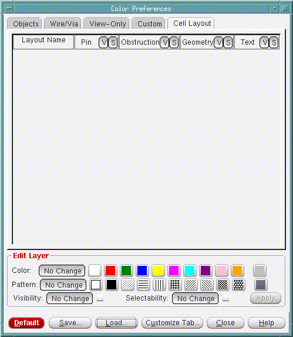
Customizing Layer Color Patterns (Pattern Window)
You can customize the color patterns for the layers by clicking the Custom pattern icon in the Edit Layer group. The Custom pattern icon is the rightmost icon in the Pattern field.
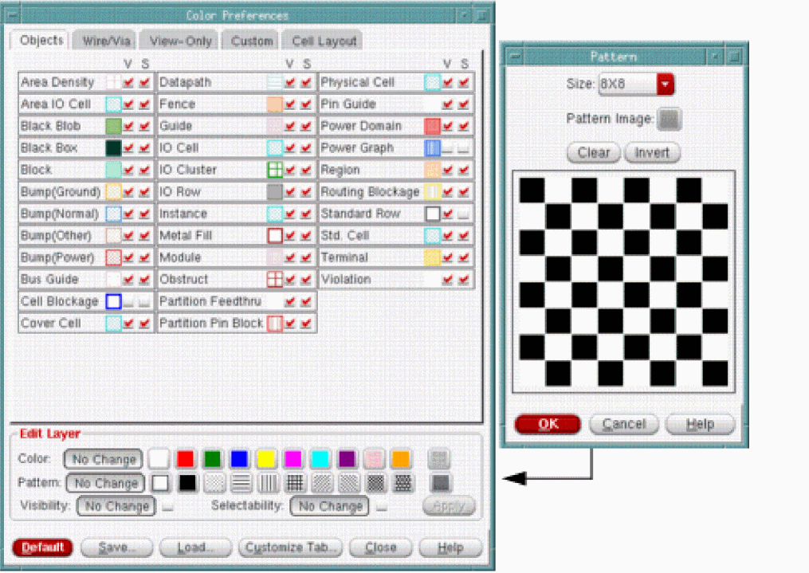
Click the Custom icon to display the Pattern form.

To clear the pattern, click the Clear button.
To invert the pattern, click the Invert button.
To customize the pattern, do the following:
- To change a square to black color, click on the square with the left mouse button.
- To change a square to white color, click on the square with the right mouse button.
Customize Tab
You can use the Customize Tabs form, accessible by clicking the Customize Tabs button in any page on the Color Preferences form, to customize, or add additional pages to the Color Bar in the main window.
In any of the pages of the Color Preferences Form, click Customize Tab.
Fields and Options
Save Color Preference
Use the Save Color Preference form to save a color preference file. A preference file is a Tcl file that contains color preference information. The recommended filename and extension name is ets.color.tcl.
In the Color Preference form, click Save.
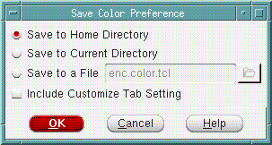
Fields and Options
|
Saves the color preferences file in the current working directory. |
|
|
Along with the color preference information, also saves the settings specified through the Customize Tab form. |
|
Multicolor Layers
During a design session, the following object types do not have a single color, but each object has a color that shows a level of severity and magnitude:
To see the level indicator colors, double-click the color button for the object type. This opens a color preferences form for that object type.
Metal Layers and Other Layered Components
Click the Wire/Via tab to see the metal layers available in the design. M0 Wire represents the masterslice layer, M1 Wire represents the bottom metal layer, and so on. The vias are also shown, with V01 representing the via between the masterslice layer and the first metal layer, V12 representing the via between the first and second metal layers, and so on.
You can set preferences for other layered components in addition to wires and vias. For each metal layer, you can set the color, stipple pattern, visibility, and selections for pins, tracks, blockages, and violations.
Creating and Editing Color Groups
You can create color groups to customize the color settings in Tempus. A color group can contain custom color settings for various objects, for example, you can set the blockage color to red in one color group and to blue in another color group. You can switch between color views during an Innovus session. The settings specified in a color group are applied in all views.
To create a Color Group, do the following:
- In the Layout window, click the All Colors button. The Color Preferences form appears.
- Create the custom color settings that you want for the group. For example, you might want to set the block color, or the visibility of blockages.
- Click the Customize Tab button. The Customize Tab form appears.
-
Click the Color Group button. The Edit Color Group dialog box appears.
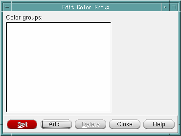
Click the Add button. The Add Color Group form appears.

In the Group Name field, enter the name of the new color group, and click OK. The new color group is created.
To specify or change the color settings for the Color Group, do the following:
- In the Layout window, click the All Colors button. The Color Preferences form appears.
- Create the custom color settings that you want for the group. For example, you might want to change the instance color, or the visibility of blackboxes.
- Click the Customize Tab button. The Customize Tab form appears.
- Click the Color Group button. The Edit Color Group dialog box appears.
- Select the name of the Color Group to which the changed color settings should be applied.
- Click the Set button. The settings are applied to the selected Color Group.
Once you create one or more color groups, the color setting for a particular group can be applied be selecting the group name from a drop-down menu next to the All Colors button in the main form. You can thus select the color group from the main window.
Color Bar
The Layout window includes an Object Color Bar that has color display buttons for objects in the design display area. Each object type has a check box for displaying the object in the design display area and a color button that displays the current color used to identify the object in the design display area.
By default, the Object Color Bar has two pages, but you can create up to four pages. Each page in the color bar can have one or more group. A group is a collection of objects that are grouped together in the Object Color Bar. This way you can view the color and visibility controls for related objects together. The default first page in the Object Color Bar displayed in the Layout window contains the group FPlan View. The default second page contains two groups: Physical View and Layers.
You can use the Customize Tab form to add pages to the Object Color Bar, add or delete the groups, and to add objects in each group. The Customize Tab form is available on all pages of the Color Preferences form.
To switch between the pages, click the Select bar.
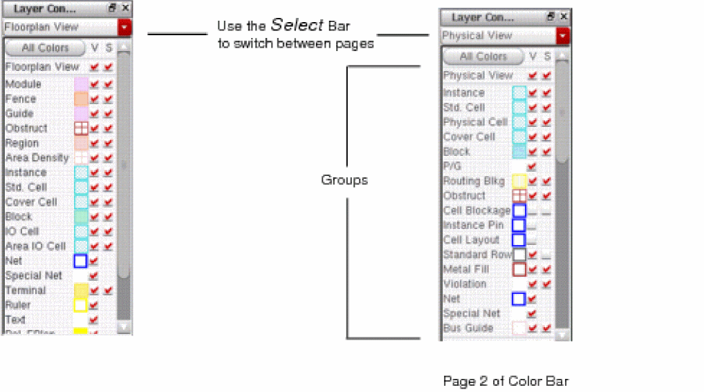
If you select the V (Visibility) check box for an object type, the object type displays in the design display area in the specified color. If you clear the check box, the object type does not display in the design display area.
If you select the S (Selectability) check box for an object type, the object type can be selected in the design display area when you use the Selection icon. If you clear the check box, the object type cannot be selected.
Object Color
Use the Select color form to customize the display color of an object.
Click on the color indicator of the object type to open the Select color form.

If you use the text fields, you must press the Return key after your text entry.
Create Ruler Preferences
Use the Create Ruler Preferences form to set the direction in which ruler lines are drawn.
To open the Create Ruler Preferences form, click the Ruler widget  .
.

Fields and Options
Satellite Window
The main window includes a satellite window, which identifies the location of the current view in the design display area, relative to the entire design. The chip area is identified by a yellow box, the satellite view is identified by the pink cross-box. When you display an entire chip in the design display area, the satellite cross-box encompasses the chip area yellow box.
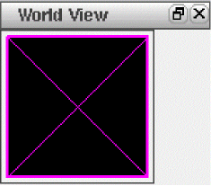
When you zoom and pan through the chip in the design display area, the satellite cross-box identifies where you are relative to the entire chip.
To move to an area in the design display area, click and drag on the satellite cross-box.
To select a new area in the design display area, click and drag on the satellite cross-box.
To resize an area in the satellite window, click with the Shift key and drag a corner of the cross-box.
To define a chip area in the satellite window, right-click and drag on an area.
Auto Query
The Layout window includes a Q icon located at the bottom of the design display area that enables and disables the auto query. When you enable auto query, text information displays for any object that is under the cursor. You can use auto query for blockages, hand-drawn or inside cell instances, instance pins, special route wires and vias, and cell instances.
If there are overlapping objects under the cursor, text information displays for the object that is on top. Use the n key to get information on the next object, and the p key to get information on the previous object. You can also use the F8 binding key to copy auto query text from the message bar in the Layout window to the software console. The text is displayed in the software console with the prefix Message.
Return to top